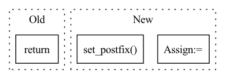

Pattern ID :6894
Before Change
if val_loss.item() > 1 or loss.item() > 1 or val_loss.item() < 0 or loss.item() < 0:
pdb.set_trace()
return
def validate(self):
returnAfter Change
self.optim_shell.zero_grad()
val_y_pred = self.model(val_x)
val_loss = self.loss(val_y_pred, val_y_truth)
sum_val_loss += val_loss.item()
val_loss.backward()
self.optim_shell.step()
// optim_kernel
self.optim_kernel.zero_grad()
y_pred = self.model(x)
loss = self.loss(y_pred, y_truth)
sum_loss += loss.item()
loss.backward()
nn.utils.clip_grad_norm_(self.model.kernel.parameters(),
self.config["search"]["grad_clip"])
self.optim_kernel.step()
// postfix for progress bar
postfix = OrderedDict()
postfix["Loss(optim_shell)"] = round(sum_val_loss/(step+1), 3)
postfix["Loss(optim_kernel)"] = round(sum_loss/(step+1), 3)
pbar.set_postfix( postfix)
return round(sum_val_loss/n_steps, 3), round(sum_loss/n_steps, 3)
In pattern: SUPERPATTERN
Frequency: 4
Non-data size: 3
Instances Fragment ID: 23256083
Project Name: woodywff/nas_3d_unet
Commit Name: 483c269d68b745c65d71e2a8566c35bd92e0b584
Time: 2020-03-23
Author: woodywff@aliyun.com
File Name: search.py
M Class Name: Searching
N Class Name: Searching
M Method Name: train(1)
N Method Name: train(1)
M Parent Class:
N Parent Class:
M File Name: search.py
N File Name: search.py
M Start Line: 139
M End Line: 176
N Start Line: 138
N End Line: 180
Before Change
self.on_epoch_end(epoch, train_stats, valid_stats)
return train_stats, valid_stats
def write_wavs(self, predictions, inputs, epoch):
ids, wavs, lens = inputsAfter Change
self.modules.train()
train_stats = {}
with tqdm(train_set) as t:
for i, batch in enumerate(t):
stats = self.fit_batch(batch)
self.add_stats(train_stats, stats)
average = self.update_average(stats, iteration=i + 1)
t.set_postfix(train_loss=average)
valid_stats = {}
if valid_set is not None:
self.modules.eval() Fragment ID: 23256080
Project Name: speechbrain/speechbrain
Commit Name: 7574b09b2beef5c05957e5cb23df11ed7fe922e4
Time: 2020-06-01
Author: jerrygood0703@gmail.com
File Name: recipes/DNS/Baseline/experiment_baseline.py
M Class Name: SEBrain
N Class Name: SEBrain
M Method Name: fit(4)
N Method Name: fit(4)
M Parent Class: sb.core.Brain
N Parent Class: sb.core.Brain
M File Name: recipes/DNS/Baseline/experiment_baseline.py
N File Name: recipes/DNS/Baseline/experiment_baseline.py
M Start Line: 111
M End Line: 129
N Start Line: 111
N End Line: 118
Before Change
if env is not None:
env.close()
return scores
After Change
obs, reward, done, infos = env.step(action)
for i in range(agents):
if not dones[i]:
steps[i] += 1
if "r" in infos[i].keys() and not dones[i]:
assert done[i]
dones[i] = True
scores.append(infos[i]["r"])
metrics.update({
"eval_score_mean": np.mean(scores),
"eval_score_std": np.std(scores),
"eval_steps_mean": np.mean(steps),
"eval_steps_std": np.std(steps)
})
if verbose:
t.set_postfix( metrics)
t.update()
if env is not None:
env.close() Fragment ID: 23256086
Project Name: thomas-schillaci/simple
Commit Name: c616a49a834caf2419843c1e6b265dab166ca691
Time: 2021-01-31
Author: thomas.schillaci@gmail.com
File Name: atari_utils/atari_utils/evaluation.py
M Class Name: AnonimousClass
N Class Name: AnonimousClass
M Method Name: evaluate(6)
N Method Name: evaluate(6)
M Parent Class:
N Parent Class:
M File Name: atari_utils/atari_utils/evaluation.py
N File Name: atari_utils/atari_utils/evaluation.py
M Start Line: 9
M End Line: 41
N Start Line: 14
N End Line: 52
Before Change
if val_loss.item() > 1 or loss.item() > 1 or val_loss.item() < 0 or loss.item() < 0:
pdb.set_trace()
return
def validate(self):
returnAfter Change
sum_val_loss = 0
with tqdm(train_epoch, total = n_steps,
desc = "Searching | Epoch {} | Training".format(self.epoch)) as pbar:
for step , (x, y_truth) in enumerate(pbar):
x = torch.as_tensor(x, device=self.device, dtype=torch.float)
y_truth = torch.as_tensor(y_truth, device=self.device, dtype=torch.float)
try:
val_x, val_y_truth = next(val_epoch)
except StopIteration:
val_epoch = self.val_generator.epoch()
val_x, val_y_truth = next(val_epoch)
val_x = torch.as_tensor(val_x, device=self.device, dtype=torch.float)
val_y_truth = torch.as_tensor(val_y_truth, device=self.device, dtype=torch.float)
// optim_shell
self.optim_shell.zero_grad()
val_y_pred = self.model(val_x)
val_loss = self.loss(val_y_pred, val_y_truth)
sum_val_loss += val_loss.item()
val_loss.backward()
self.optim_shell.step()
// optim_kernel
self.optim_kernel.zero_grad()
y_pred = self.model(x)
loss = self.loss(y_pred, y_truth)
sum_loss += loss.item()
loss.backward()
nn.utils.clip_grad_norm_(self.model.kernel.parameters(),
self.config["search"]["grad_clip"])
self.optim_kernel.step()
// postfix for progress bar
postfix = OrderedDict()
postfix["Loss(optim_shell)"] = round(sum_val_loss/(step+1), 3)
postfix["Loss(optim_kernel)"] = round(sum_loss/(step+1), 3)
pbar.set_postfix( postfix)
return round(sum_val_loss/n_steps, 3), round(sum_loss/n_steps, 3)
Fragment ID: 23256085
Project Name: woodywff/nas_3d_unet
Commit Name: 483c269d68b745c65d71e2a8566c35bd92e0b584
Time: 2020-03-23
Author: woodywff@aliyun.com
File Name: search.py
M Class Name: Searching
N Class Name: Searching
M Method Name: train(1)
N Method Name: train(1)
M Parent Class:
N Parent Class:
M File Name: search.py
N File Name: search.py
M Start Line: 139
M End Line: 176
N Start Line: 138
N End Line: 180
Before Change
def validate(self):
return
if __name__ == "__main__":
search_network = Searching(jupyter = False)After Change
sum_loss = 0
with tqdm(self.val_generator.epoch(), total = n_steps,
desc = "Searching | Epoch {} | Val".format(self.epoch)) as pbar:
for step , (x, y_truth) in enumerate(pbar):
x = torch.as_tensor(x, device=self.device, dtype=torch.float)
y_truth = torch.as_tensor(y_truth, device=self.device, dtype=torch.float)
y_pred = self.model(x)
loss = self.loss(y_pred, y_truth)
sum_loss += loss.item()
pbar.set_postfix(Loss=round(sum_loss/(step+1), 3))
return round(sum_loss/n_steps, 3)
if __name__ == "__main__": Fragment ID: 23256075
Project Name: woodywff/nas_3d_unet
Commit Name: 483c269d68b745c65d71e2a8566c35bd92e0b584
Time: 2020-03-23
Author: woodywff@aliyun.com
File Name: search.py
M Class Name: Searching
N Class Name: Searching
M Method Name: validate(1)
N Method Name: validate(1)
M Parent Class:
N Parent Class:
M File Name: search.py
N File Name: search.py
M Start Line: 180
M End Line: 180
N Start Line: 187
N End Line: 199